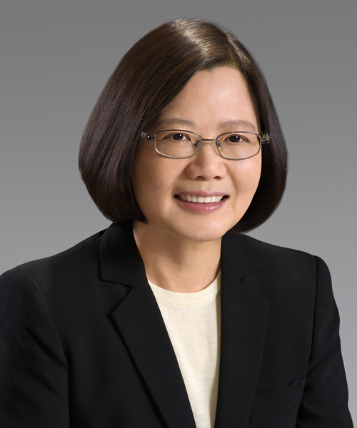

民主進步黨
民主進步黨，簡稱民進黨、DPP（來自英語譯名「Democratic Progressive Party」），是中華民國主要政黨之一，也是目前中華民國的執政黨及立法院第一大黨。 成立於1986年9月28日，由黨外運動各團體於臺灣省戒嚴令與黨禁解除前整合而成。
民主進步黨於1986年9月28日在中華民國臺北市圓山大飯店成立。1986年「黨外選舉後援會」秘密策劃組織新黨，邀請黨外人士150多人參加、實際出席132人，在圓山大飯店舉行「1986黨外選舉全國後援會候選人推薦大會」上正式宣布創立民進黨。
現任黨主席:蔡英文

Back
GO TO FirstSection